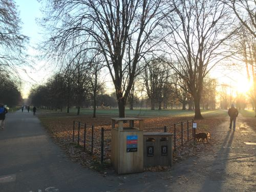
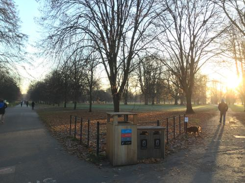

소개
세월이 지나면서 당신의 모습은 어떻게 변했을까요? 당신의 자녀들은 어떤모습으로 자랐을까요? 그리고 부모님들은요? 그리고 즐겨찾는 공원과 산과 들판의 광경은요? 또한 벌판에 빌딩이 지어지는 순간부터 완성된 건물을 보고 있는 지금, 지난 몇 달동안 의 변화들이 궁금하지 않으신가요? 궁금하시다면 간직해두셨던 사진들을 모아보세요.그리고 Zoetic이 보여주도록 해보십시오.
Zoetic은 무엇일까요?
Zoetic 은 일련의 사진들을 가지고 시간경과에 따른 비디오를 생성합니다. 시리즈는 대체로 다음 중의 하나입니다.
- 매우 정적인 장면으로 예를 들어 계절의 변화를 담은 사진들이거나 또는 건물의 기초공사부터 건물이 완성되기까지의 빌딩 건설현장의 장면을 담은 장면입니다.
 


Bins project 이미지


Flats project 이미지
- 같은 사물이나 인물을 대상으로 시간이 지나면서 배경이 바뀌는 장면들입니다. 긴 시간이 지남에 따라 바뀌어진 역사적인 장면이 될 수 있고 한사람의 탄생부터 현재 그 사람의 모습까지을 담은 사진 모음이 될 수도 있습니다.


Ageing project 이미지
Zoetic 은 아래와 같지 않습니다
- 부자연스러운 결과를 생성하거나 사용자에게 굉장히 많은 기술을 요구합니다.
- 동일한 카메라 및 조명조건으로 한장면에서 다음 장면으로 신중하게 조절되어지는 장면이 필요한 응용프로그램입니다. Zoetic 프로그램을 만들게 된 중요한 동기는 사진들을 자유자제로 원할한 이미지 프로세싱에 있습니다
비디오 예제
유투브 참고영상 (Zoetic 시연 및 사용법)
https://www.youtube.com/channel/UC9DS_eg5oE_9HmVVYuUBkNw
Zoetic의 몇 가지 기능
- 이미지해상도 및 중간 프레임의 숫자에 인위적인 제약이 없습니다.
- 사진의 날짜를 표시하는 비디오자막을 제작할 수 있습니다.
- 프로젝트 보내기 및 가져오기.
- 정렬된 이미지들 보내기. 이것이 왜 유용한지 여기서 확인하십시오.
Zoetic 사용법
- 프로젝트 주제를 정하고 필요한 이미지를 수집하십시오. (사진들이 잘 정리되어 있지 않은 이상 대부분 이단계에서 가장 많은 시간이 소요됩니다) 가능한 한 너무 작지않은 피사체의 이미지를 찾으십시오. 피사체의 크기가 너무 작을 경우, 사진 크기 재조정 및 zooming후 제작한 비디오 결과에 만족치 못할 가능성이 있습니다.
- 프로젝트 버튼을 눌러 새 프로젝트를 만들어 이미지들을 Zoetic에 로드하십시오.
- 갤러리 기능을 사용하여 추가 이미지들을 넣고 이미지 순서를 정렬하고 필요없는 이미지를 삭제하고 날짜를 정돈합니다. 비디오가 생성되면 모든 이미지가 갤러리의 첫번째 이미지에 정렬됩니다. 예를 들어 첫번째 이미지의 얼굴이 왼쪽으로 기울어져 있다면 전체 비디오의 얼굴이 왼쪽으로 기울어집니다.
- 마크 포인트 기능을 사용하여 모든 이미지의 정렬 지점을 선택하십시오. Zoetic은 사용자가 각 이미지에서 두 지점의 두개의 포인트 점을 지정하여 이미지를 정렬해야 합니다. 이 두 지점의 포인트는 모든 이미지에서 같은 위치에 있어야 합니다. 따라서 모든 이미지에서 볼 수 있어야 합니다 (또는 정확하게 추측할 수 있어야 합니다). 이미지 사이의 정렬 지점을 바꾸지 않으면 이미지가 거꾸로 된 것을 알 수 있습니다. 예를 들어, 문 왼쪽 상단 모서리와 오른쪽 하단 모서리가 정렬 지점으로 사용되는 경우, 첫번째 점이 왼쪽 상단 (또는 오른쪽 하단) 모서리이고 두번째 점이 맨 아래 모든 이미지에서 오른쪽 (또는 왼쪽 상단) 모서리, 그렇지 않으면 일부 이미지에 거꾸로 된 문이 생깁니다. 정렬 포인트에서 눈을 사용하는 프로젝트의 경우 눈을 자동으로 감지 할 수 있습니다. Zoetic의 메인 메뉴에서 눈 감지 기능을 선택하여 모든 프로젝트의 이미지를 처리하거나 마크 포인트 기능에서 눈모양 아이콘을 탭하여 현재 이미지 눈을 감지합니다. 전자의 경우 특히 두개 이상의 얼굴이 포함된 이미지의 경우 눈이 제대로 감지되었는지 수동으로 확인해야 합니다.
- 자르기 기능을 사용하여 비디오를 제작할 평균이미지의 범위를 지정해주십시오. 시리지의 이미지가 매우 일관된 방식으로 촬영 된 장면 (정확히 같은 위치와 방향에서 촬영 된 장면) 일 경우 자르기가 필요하지 않을 수 있지만 오랜 기간 동안 이미지를 찍은 경우에는 그렇지 않을 수도 있습니다. 시리즈의 평균이미지에서 필요한 영역 (예 : 주제 헤드의 영역)을 선택하십시오. 자르기에 대한 자세한 내용은 여기 를 참조하십시오.
- 비디오 만들기 를 누릅니다. 동영상을 만드는데 잠시 시간이 소요됩니다. 이미지의 해상도, 필요한 중간 단계 수 및 사용되는 장치의 처리 능력에 따라 제작되어지는 시간이 달라집니다.
- 비디오 재생 을 누릅니다. 기본적으로 동영상은 기기의 영화 폴더에 저장되므로 동영상을 포함하여 동영상보기를 처리하는 모든 앱에서 볼 수 있습니다.
| 첫번째 프로젝트 |
|---|